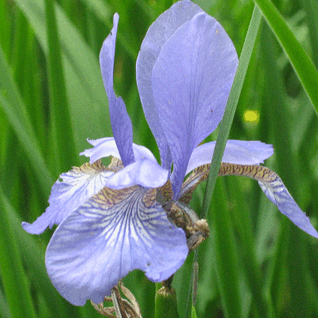

Scrawl-canvas v8
- Filters test 102
Use entitys to generate points for the tiles filter
To change image, drag-and-drop an image file over the canvas
Generate points from
A LineSpiral entity
A set of Oval entitys
Opacity
Step along path
Show path
Hide
Show
Origin offset X
Origin offset Y
Tile radius
Spiral radius increment
spiral rad inc adjust
Test purpose
Create a test Picture entity
Create a pixelate filter and apply it to the test entity
Update filter attributes and observe the effect they have on the entity
Touch test:
not required
Annotated code
